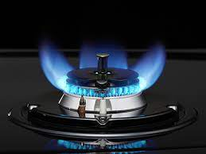

아파트 화재 발생 원인이 무엇이 있을까요?
요즘 아파트가 많아지면서 더 달아 아파트 화재가 자주 발생하고 있는 상황입니다. 아파트 구조상 한 층에
서 화재가 발생하면 다른 층까지 직접적으로 피해를 보는 상황이기 때문에 화재에 대해서 철저히 관리해
야 합니다.
- 부주의로 인한 화재
- 음식 중 화재
- 집안에서 흡연
- 절연 기기 화재
- 전기적 요인
- 과부화/과전류로 인한 화재
- 트래킹 현상으로 인한 화재
- 기계적 요인
- 과열, 과부하
- 내부 기계 결함
- 자동제어 시스템 에러
